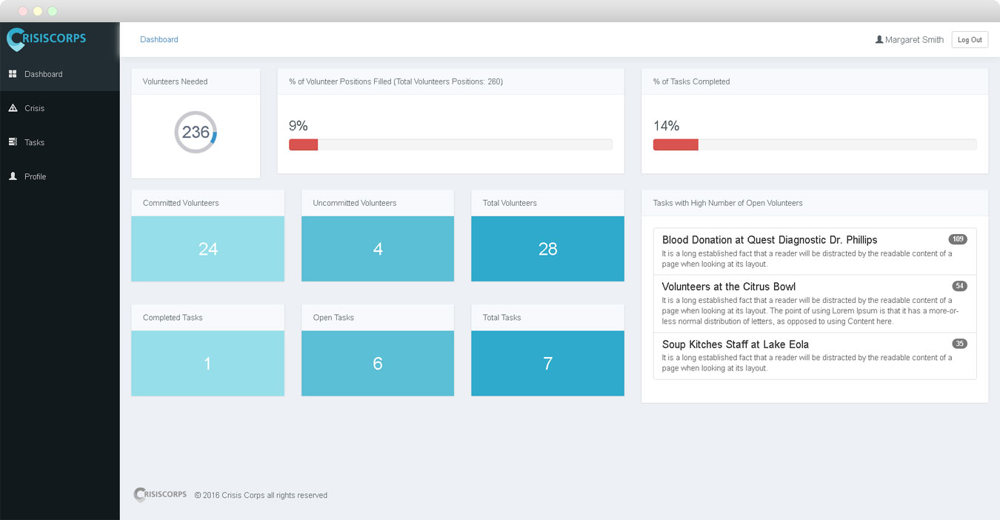

Logo
We wanted a mark that could stand alone. The C provides that and is inspired from a map marker. Idea being that Crisiscorps provides that marker to guide volunteers to where they are needed. The metalic blue/green was chosen to give a calm and professional look.
Website Details the Concept
The website we built explains the ideas behind Crisiscorps. When put into use by a city, we envision the main website being a central hub of information. During non crisis times, the site would encourage volunteers to sign up and businesses in the community to coordinate with the site administrator to coordinate donation pledges.
During a crisis the site would be a primary source for information. From pre crisis warnings in the event of hurricanes, to during and post crisis times that display information vital to the community.
A Community of Organizers and Volunteers
Two ideas that we brought to this project were to make it easier for communities to coordinate reliefe and volunteer efforts, and give members of the community to get the word out on what was needed. Each user gets access to a Dashboard displaying all the tasks the administrator has created, and how many volunteers are still needed to reach the goals for each task. This gives users of the site the ability to reach out to theri family, friends and followers on social media with specific details on what is needed.
Leverage What The Community Uses
Integrating social media into this project would be incredibly beneficial. The ability to spread the word throughout the community on accurate specific details on the volunteers needed would help tremendously. Crisiscorps gives communities the ability to quickly disseminate accurate information that in the past would very difficult and combersome.